6.3 Copias a unidad en Drive
1. Introducción
En este apartado, se va a realizar un caso práctico de copia de seguridad almacenada en la nube. En este caso, y por ser la opción más asequible, se utilizará Google Drive.
2. Crear copia de seguridad
En primer lugar, hay que pulsar 'Añadir copia de seguridad' y luego, seleccionar 'Configurar nueva copia de seguridad'. Para continuar, hay que pulsar 'Siguiente'.
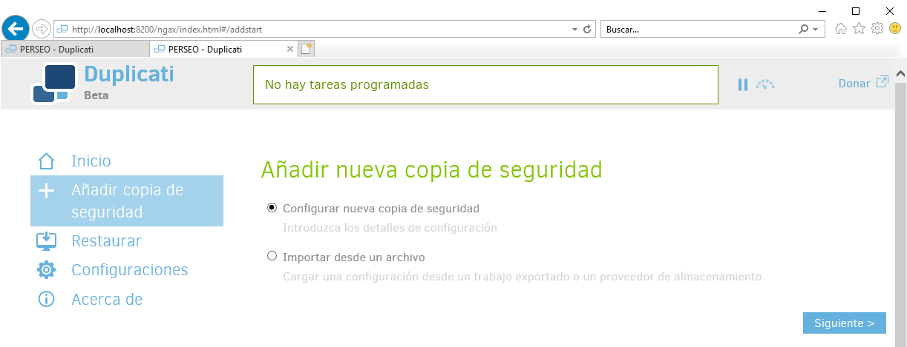
Figura 1. Añadir nueva copia de seguridad.
Al igual que se realizó en el apartado 6.2, hay que elegir un nombre, descripción (opcional), cifrado y contraseña para la copia de seguridad.
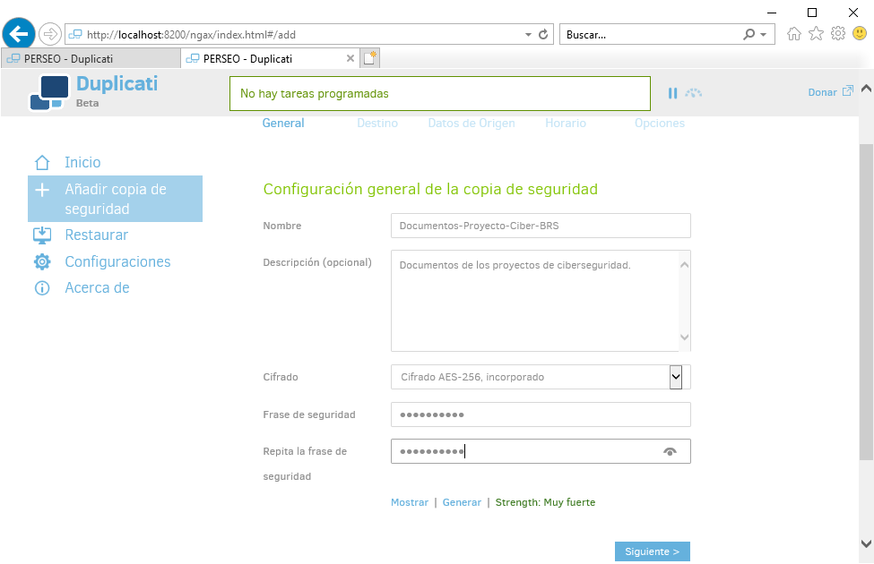
Figura 2. Ingresar el nombre, descripción, cifrado y frase de seguridad.
Dado que en este caso se va a utilizar Google Drive para el almacenamiento de las copias, hay que crear un directorio que será el espacio donde se almacenarán las copias.
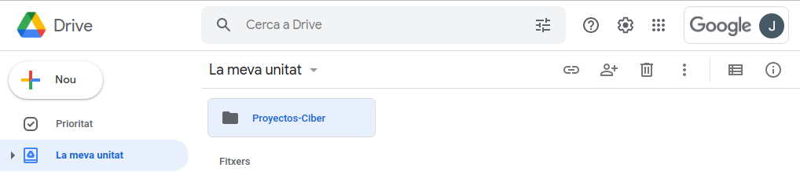
A continuación, en la siguiente pantalla hay que introducir la ruta del directorio. Si se crea en la raíz, con poner el nombre del directorio es suficiente. También es necesario introducir el Auth ID. Para ello, hay que ingresar las credenciales de la cuenta de Google tras pulsar el botón de “AuthID”.
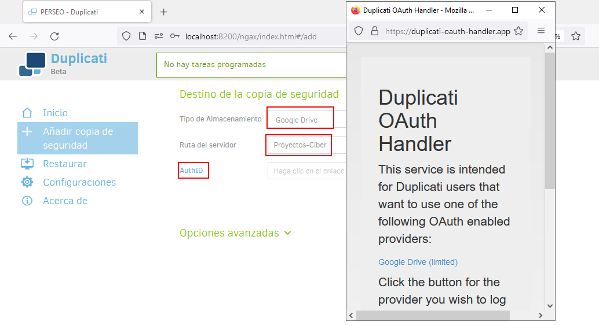
Figura 3. Ingresar las credenciales de acceso a la cuenta de Google Drive.
A continuación, se realiza una prueba de conexión para comprobar que todo funciona correctamente. Si la prueba es correcta, hay que pulsar 'Siguiente' para continuar.
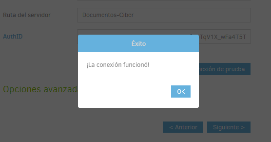
Figura 4. Prueba de funcionamiento.
Al igual que se realizó en la copia a un disco externo, hay que seleccionar la ubicación de los ficheros, para este caso, la carpeta C:\Documentos-Proyectos-Ciber y su contenido.
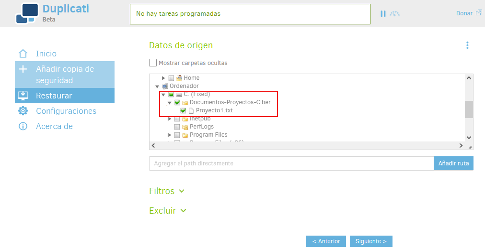
Figura 5. Carpeta a realizar la copia.
A continuación, hay que introducir el horario de la copia, para este caso, se selecciona todos los días a las 23:00 h.
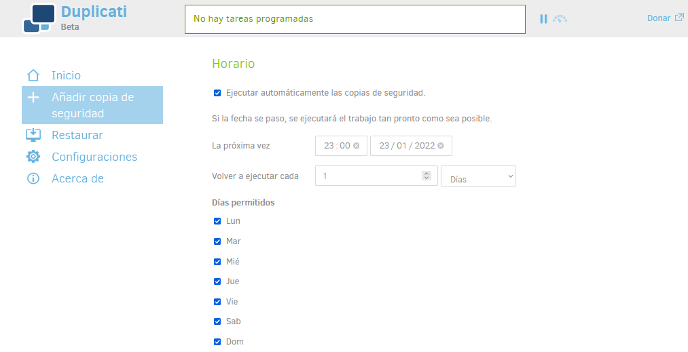
Figura 6. Horarios de la copia.
El siguiente paso es seleccionar el tipo de copia, para este caso, se selecciona “Retención de copias inteligente” y se guarda la configuración.
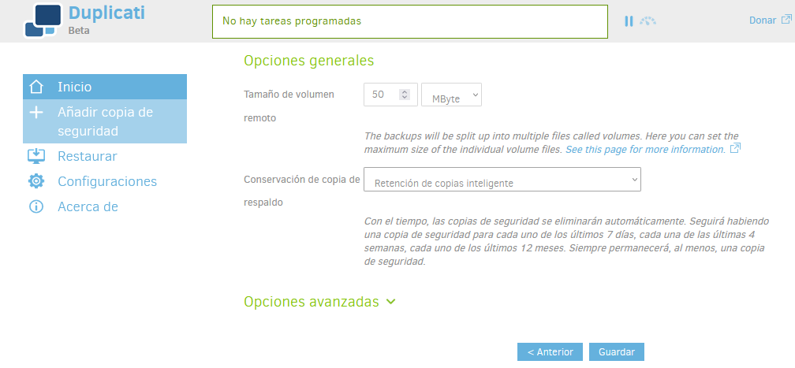
Figura 7. Seleccionar el tipo de copia.
Una vez se guarda, aparece la pantalla de inicio donde se tiene la copia de seguridad preparada para realizarse cuando llegue el momento o para realizarla en este momento si se pulsa en el enlace 'Ejecutar ahora'.
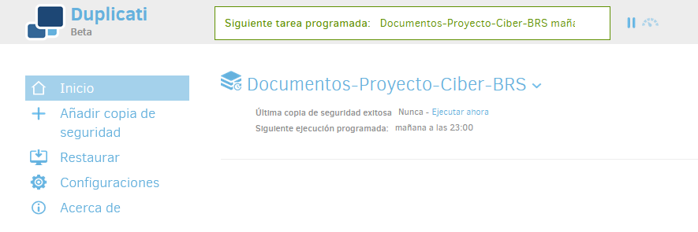
Figura 8. Configuración de la copia de seguridad creada.
3. Restaurar copia de seguridad
Tras realizar la copia ya sea por el tiempo de programación o por la ejecución bajo demanda, se puede observar que en la unidad de drive aparecen las copias de los ficheros.
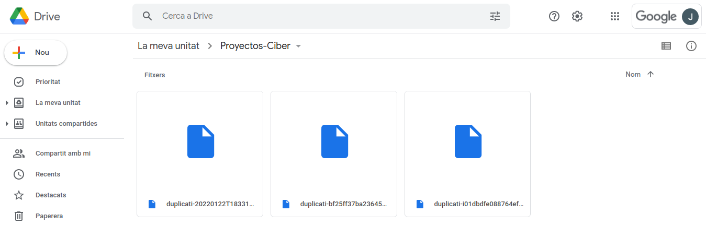
Figura 9. Copia de seguridad en Drive.
Para restaurar la copia, hay que acceder al panel de “Restaurar” y seleccionar de dónde se quiere restaurar. Para este caso, se selecciona Documentos-Proyecto-Ciber-BRS.
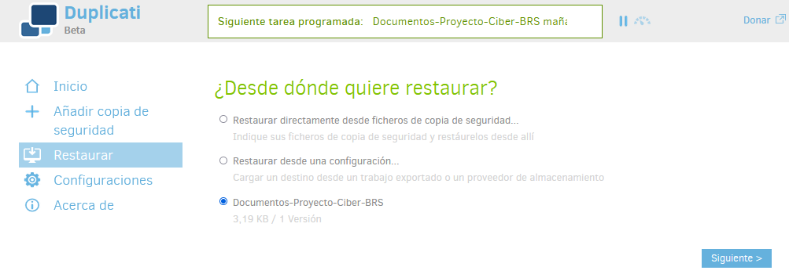
Figura 10. Seleccionar de dónde se quiere restaurar.
A continuación, hay que seleccionar los directorios/ficheros a restaurar. Para este ejemplo, se selecciona el directorio y todo su contenido. Para seguir, hay que pulsar 'Continuar'.
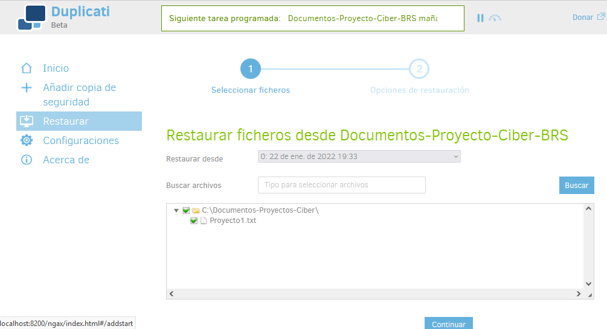
Figura 11. Seleccionar los directorios/ficheros a restaurar.
A continuación, hay que seleccionar la ubicación donde se guardarán los ficheros. Para este caso, se seleccionar la restauración en la 'Localización original' y 'Sobreescribir' los ficheros existentes. Para comenzar con el proceso, hay que pulsar 'Restaurar'.
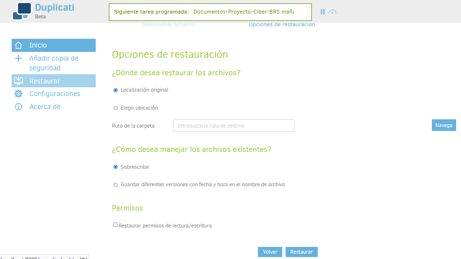
Figura 12. Seleccionar las opciones de restauración.
Si todo ha ido bien, se informa del éxito de la restauración.
| 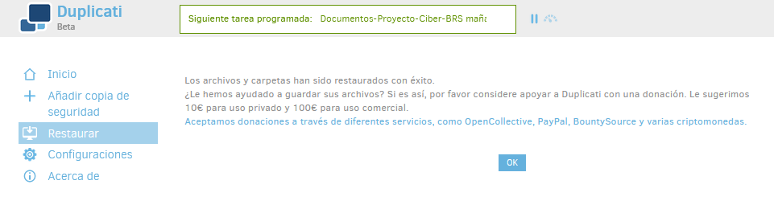 | 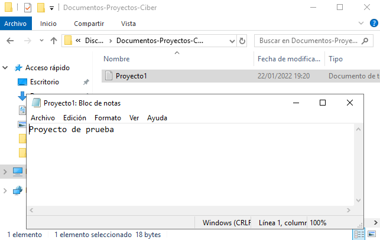 |
Obra publicada con Licencia Creative Commons Reconocimiento No comercial Compartir igual 4.0